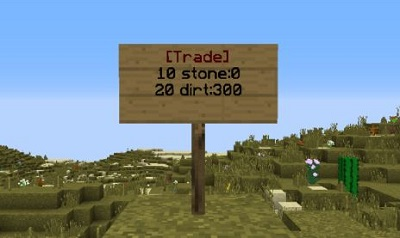

EarthMC
Getting started
EarthMC is a minecraft server with a custom made earth map.
This guide will get you started on your adventure.
Join the minecraft server using EarthMC.xyz, join our discord server with this link and open the dynmap with this link.
You can view other towns you want to join or take coordinates of the map to find a place you want to settle.
Gold ingots are used as currency and referred to as "gold" or G for short. You can get gold from mining gold ore, stealing from others and voting using
/vote
All towny commands are listed on the official towny website, here.
In-game, run:
/towny ?
All essentials commands are listed on the essentials wiki, here.
In-game, run:
/essentials help
Dynmap
The interactive web map can be found at map.earthmc.xyz.
The left side of the screen holds four tools, the zoom tool, the coordinate display, the layers selector, and the link creator.
The right side of the screen holds a menu for map selection and viewing the player list and a button to log in to the dynmap using an account created by running
/dynmap webregister
Glossary of map markers
- - Town part of a nation, click marker to see which nation it belongs to.
 - Independent town not part of a nation.
- Independent town not part of a nation. - Nation capital.
- Nation capital. - World spawn.
- World spawn.
Red areas on the map are claimed areas and blue areas are embassies.
Creating a town
In order to create a town you need to have 32 gold in your inventory.
Make sure to stand in the chunk you want to settle your town in before running the command.
Once you're ready, open chat and type:
/t new (townnamehere)
Make sure your town name does not include a space or any special characters.
Towns are safe from raiding and looting as long as you don't invite the theif to your town or set your town permissions to allow their access.
Mayors can change town settings such as resident taxes, mob spawning or toggle pvp. For more info, use
/t toggle and /t set
In order to expand your town one chunk you have to pay 16 gold and use
/t claim
You can invite other players to your town using either
/t add (player) or /t invite (player)
Players are kicked from towns after 42 days of inactivity and empty towns are disbanded.
Creating a nation
Town mayors may create nations to join together with other towns. Nations have a capital town which has a king instead of a mayor. Nations can fight in wars and collect taxes from towns within the nation.
A nation costs 128 gold to create and currently has no upkeep costs but this may be reintroduced in the future.
Upkeep is taken from the nation vault. A nation will be removed if it fails to pay upkeep.
Make sure you have enough gold (128) in your town vault before running
/n new (nationname).
Towns in nations also have the ability to create outposts, a piece of land not connected to the capital.
You need 32 gold in your town vault to create an outpost.
/town claim outpost
Wars
World wars can only be started by staff. Make sure to join our discord server to know when a world war is coming up!
All towns in nations will take part in the war, towns out of nations can not participate.
To see war progress, use the command
/t war.
In order to attack a town you and your allies have to siege enemy plots by standing in them until you get in to the home block. Players may only siege plots on the edge of the town, so you have to work yourselves inward. Towns will fall when their home blocks are captured.
Normal town plots have 16 health points while the home block has 64. A plot loses 1 HP every 5 seconds and the damage is multiplied by the number of enemies standing in it. You can also heal your own plots by standing in them.
Once you are in the process of attacking, the defending town will be alerted by fireworks and coordinates in chat. Attackers are able to place TNT and ladders inside of enemy territory to breach into the town. Don’t worry, exploded blocks regenerate after a minute.
An entire nation will fall if their king is assasinated or if the capital is sieged. All towns in the nation fall if the nation falls.
Nations may ally with others. Allied nations can heal each other's plots and their players cannot harm each other.
/nation ally add/remove (nationname)
If you are killed while in an enemy town you will be sent to their town jail (if it exists).
To get out you will need someone to either siege down the jail plot you are stuck in or have allies break you out with TNT.
/r jail paybail
If you're a donator you can place your nation's banner on your head. Good way to represent your nation during wartime.
The war event ends when there is only one nation or alliance of nations left. The winning town, the town with the most points, will then host a winner's ceremony where they are awarded a special trophy.
Towns get 10 points if their players siege enemy plots, 30 extra points for defeating a town, 100 extra points for defeating a nation and 10 points per player kill.
Sign shops
Selling items to other players is a great way to make gold. Trade signs allow you to sell specified items even when you are not online.
[trade]
(amountForEach) (get-item name/get-item id)
(amountForEach) (give-item name/give-item id):(totalAmount)
For example, if you would like to sell 20 dirt for 10 stone and have 300 dirt to sell your sign should look like this:
You can also use block ID's instead of block names if the text gets too long (Eg. stone is replaced by 1 and dirt by 3).
If a person right clicks on the sign they will buy the amount specified on line 2 for the amount specified on line 3. If the owner right clicks on the sign they will get the items that have been paid to them, and if they do with the item they are selling in their hand they will refill the sign.
Players can destroy their own signs but not other's signs, mayors can destroy anyone’s signs in their town. This is so towns can have a kind of marketplace where players can put up and take down their own signs without other players in the town being able to destroy other’s signs.
Trade signs are further explained on the official essentials website found here
Ranks
You can set diffrent ranks for your town/nation members. This gives you the power to limit access but also grant your residents diffrent capabilities.
/town rank add (player) (rank) or /nation rank add (player) (rank)
- Town ranks
- Councillor - Has almost all of the commands the Mayor has.
- Builder - A rank that has all public plot permissions everywhere in the town.
- Trusted - A rank that has all private plot permissions everywhere in the town.
- Recruiter - Can invite players to the town.
- Police - Is able to jail other town members.
- Settler - Can claim land for the town.
- Tax-exempt - Pays no taxes.
- Treasurer - Can withdraw from the town vault.
- Nation ranks
- Chancellor - Has almost all of the commands the King has.
- Colonist - Can invite to nation.
- Royal-Treasurer - Can use the nation's economy.
- Main server ranks
- Donator - Awesome people who support this community by paying the bills.
- Mod - Enforces rules, helps players with technical issues and answer player questions.
- Owner/Admin - Administrates the server, website and forum and fixes all sorts of technical issues.
Support
For support please use the support bot in the #support-bot channel in Discord.
Rules and ban appeals
Ban appeals are handled in our ban appeals discord server, click here to join.
Donate
If you'd like to help keeping EarthMC alive you can donate below. All money will go towards the server and the costs associated with hosting it, we do not take any of it for ourselves. As thanks you will receive some cool cosmetic features listed below.
- /hat command, place an item over/on your head. This will allow you to place your nation/town banner on your head, great for wars!
- Access to /nick, change your in-game name.
- Access to private donator chat in Discord, have more say in server changes here.
- /seen command, know when someone was last seen online.
- /playtime, check how much time you and others have spent on the server.
- Yellow colored rank both in-game and in our discord server. If you donate 20$ you get a purple rank instead.
- /party, invite other players to a private chat channel in-game.
- Make my day :)